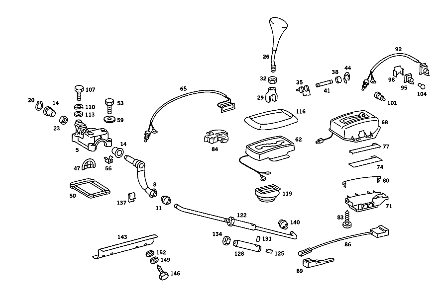

| № | Артикул | Название | Кол. | Примечание |
|---|---|---|---|---|
| 5 | A 115 267 35 05 | Опорный кронштейн | 1 | |
| 5 | A 123 267 03 05 | ПОДШИПНИК | 1 | |
| 8 | A 115 260 05 38 | Вал упр. перекл.передач (GEARSHIFT SHAFT) | 1 | |
| 8 | A 123 260 12 38 | Вал (SHAFT) | 1 | |
| 11 | A 115 992 03 10 | - Втулка подшипника (BEARING BUSHING) | 1 | |
| 14 | A 115 267 12 50 | - втулка (BUSHING) | 1 | |
| 20 | N 000471 016001 | Стопорное кольцо | - | |
| 20 | A 094 994 24 00 | Стопорное кольцо (RETAINING RING) | 1 | |
| 23 | A 115 267 00 52 | Диск (WINDOW) | 1 | |
| 26 | A 123 267 04 10 | Рукоятка рычага селектора (SELECTOR LEVER KNOB) | 1 | |
| 26 | A 107 267 00 10 | Рукоятка рычага селектора (SELECTOR LEVER KNOB) | 1 | КОЖ.ОБИВКА |
| 29 | A 126 267 01 23 | Вилкообразная головка (CLEVIS) | 1 | |
| 32 | N 070616 010003 | Гайка (NUT) | 1 | |
| 35 | A 126 993 01 20 | пружина | 1 | |
| 38 | A 115 267 09 50 | втулка (BEARING CASE) | 2 | |
| 41 | A 115 267 01 74 | БОЛТ | 1 | |
| 44 | N 912002 006000 | Механический фиксатор | 2 | |
| 47 | A 115 267 03 76 | Диск (WINDOW) | 1 | |
| 50 | A 115 267 03 80 | Уплотнительная прокладка (GASKET) | 1 | |
| 53 | N 914130 006100 | Винт (SCREW) | 4 | |
| 56 | A 000 990 65 91 | ГАЙКОДЕРЖАТЕЛЬ | 1 | |
| 59 | N 009021 006205 | Шайба | - | |
| 59 | N 009021 006208 | Шайба (WASHER) | 1 | 6 MM |
| 62 | A 000 260 09 72 | Коммутационный короб | 1 | |
| 68 | A 107 260 00 72 | Корпус механизма передач (SHIFT HOUSING) | 1 | |
| 71 | A 107 267 00 40 | - ДЕРЖАТЕЛЬ | 1 | |
| 74 | A 107 542 00 26 | - Индикатор передачи (GEAR INDICATOR) | 1 | |
| 77 | A 107 542 00 91 | - Крышка (COVER) | 1 | |
| 80 | A 107 993 01 25 | - ПРУЖИНА | 1 | |
| 83 | A 094 990 24 08 | - Шуруп (TAPPING SCREW) | 2 | |
| 84 | A 126 545 01 14 | - Переключатель (SWITCH) | 1 | |
| 86 | A 107 540 73 08 | - ЖГУТ ЭЛ.-ПРОВОДКИ | 1 | |
| 89 | A 201 545 00 28 | - ШТЕКЕР | 1 | ДВУХПОЛЮСНЫЙ |
| 104 | N 072601 012110 | Лампа накаливания (BULB) | 1 | J-12V 2W; 12V-2W |
| 107 | N 914005 006002 | Винт с неспадающей шайбой | - | |
| 107 | N 000933 006103 | Винт | - | |
| 107 | N 304017 006018 | Винт с 6-гранной головкой (HEXAGON HEAD BOLT) | 3 | M6X12 |
| 113 | N 000125 006421 | Шайба | 1 | |
| 113 | N 000125 006449 | Шайба (WASHER) | 1 | |
| 116 | A 123 267 01 97 | Уплотнительная рамка (SEALING FRAME) | 1 | |
| 119 | A 115 267 05 97 | Манжета (BOOT) | 1 | |
| 122 | A 107 260 22 33 | Тяга переключения передач | 1 | |
| 134 | N 070616 010004 | - Гайка (NUT) | 1 | |
| 137 | A 000 994 29 60 | предохранитель (SECURING) | 2 | |
| 140 | A 115 992 03 10 | Втулка подшипника (BEARING BUSHING) | 1 |
Позиций: 45 · подписано на схемах: 45 · колесо — плавный зум в курсор, перетаскивание — пан, двойной клик — зум, клик по артикулу — скопировать.